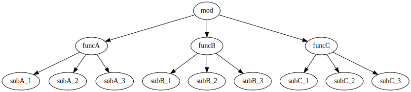

27. 遅延ロード 編
ある程度の規模のプロジェクトでは、複数のモジュールを import することになります。 そして import したモジュール内でまた別のモジュールを import しています。
スクリプト言語における import は、動的なロード処理を意味します。 あるスクリプトを起動すると、 そのスクリプトが利用している全てのモジュールのロード処理が行なわれた後に、 ようやくスクリプトのメイン処理が動き出します。
例えば、次の図に示すような import の関係があった場合、 メインの mod モジュールの処理が行なわれるのは、 関連する全てのモジュールのロードが終ってから mod モジュールの処理が行なわれます。
digraph G {
rankdir = TB;
mod -> funcA
mod -> funcB
mod -> funcC
funcA -> subA_1
funcA -> subA_2
funcA -> subA_3
funcB -> subB_1
funcB -> subB_2
funcB -> subB_3
funcC -> subC_1
funcC -> subC_2
funcC -> subC_3
}
しかし、 import したモジュールを全て常に使うとは限りません。
例えば、3 つの機能(funcA,funcB,funcC)を提供するプログラムを考えます。 このプログラムの 3 つの内の一つを選択して実行するような場合、 選択されなかった残りの 2 つの機能は使われないことになります。
import は、モジュールが使われるかどうかに関係なく、 モジュールをロードします。 つまり、モジュールのロード処理に掛る時間や、 ロードしたデータを格納しておくメモリ領域を無駄にすることになります。
上記の図で説明すると、 funcA が選択された場合 funcB, funcB_1 〜 funcB_3、 func_C, funcC_1 〜 funcC_3 が無駄になります。
プロジェクトの規模が小さい場合、 この無駄を気にする必要はほとんどありません。 しかし、プロジェクトの規模が大きくなった場合、 この無駄を無視できなくなってきます。
例えば一つのモジュールのロード処理に必要な時間が 0.01 秒だったとして、 100 個のモジュールがあれば 1 秒かかります。
プログラムが常駐するのであれば、ロード処理は一度きりなので、 多少起動時間がかかっても我慢できますが、 常駐せずにリクエスト毎に起動しなければならない場合、 この無駄なロード処理は無視できなくなります。
このロード処理の無駄を無くすのが遅延ロードです。
遅延ロード
遅延ロードは、起動時に関連する全てのモジュールをロードするのではなく、 モジュールが必要になったタイミングでロードする処理方式です。
上記の図で説明すると、 funcA が選択された場合、 アクセスされない funcB, funcB_1 〜 funcB_3、 func_C, funcC_1 〜 funcC_3 はロードされません。
これにより、ロード処理の時間、 ロードしたデータを格納しておくメモリ領域を無駄にしません。
遅延ロードの実現方法
遅延ロードは、モジュールにアクセスしたタイミングでロード済みかどうかを判断し、 ロードしていなければロードし、 ロードしていなければロード済みのデータを利用します。
一方通常のロードは、 起動時(import したタイミング)に数珠繋ぎでモジュールをロードします。
つまり、遅延ロードでは、通常のロードと比べて判定処理が入るので その分のオーバーヘッドがあります。 もちろんオーバーヘッドは非常に少ないです。 しかし、オーバーヘッドが掛るのは事実であるので、 非常にクリティカルかケースでは性能劣化が発生することも考えられます。
遅延ロードを利用する場合、このようなケースの考慮が必要です。
遅延ロードの影響
前述している通り、遅延ロードには僅かなオーバーヘッドがあります。
しかし、それが影響することはほとんどないでしょう。
それよりも影響が考えられるのが、実行順序の違いです。
ロード方式の違いによる実行順序の影響
モジュールのトップスコープに書いた処理は、 そのモジュールがロードされた時に実行されます。
例えば次のようなモジュールがあった場合、
// @lnsFront: ok
print( "hoge" );
fn func() {
print( "foo" );
}このモジュールがロードされたタイミングで hoge が出力されます。 一方で、 func() は実行されないので foo は出力されません。
そして、このモジュールを import する次のモジュールがある場合、
// @lnsFront: skip
import Hoge;
print( "bar" );
Hoge.func();通常ロードの場合、次の出力が行なわれます。
hoge
bar
foo一方で遅延ロードの場合、次の出力が行なわれます。
bar
hoge
foo出力結果を比較すると、 bar と hoge の出力順番 が入れ替わっています。
なぜこのようなことが起るかというと、 通常ロードでは
-
import したタイミングでサブモジュール Hoge がロードされ、
-
そのタイミングで
print( "hoge" )が実行され、 -
サブモジュール Hoge のロード終了後に
print( "bar" )が実行される。
一方で遅延ロードでは、 通常ロードでは import したタイミングでサブモジュール Hoge がロードされず、
-
最初に
print( "hoge" )が実行され、 -
次の
Hoge.func()を実行する直前に、 サブモジュール Hoge がロードされ、 -
print( "hoge" )が処理される。
通常ロードと遅延ロードには、このような違いが起る。
ロード方式の違いによる global の影響
LuneScript のアクセス制御には pub/pro/pri/local の他に、global があります。
global の詳細については他の記事を参照していただくとして、 global はモジュールをロードしたタイミングで登録されます。
つまり、遅延ロードの影響で global のデータが登録されるタイミングがズレます。
global を使うケースは少ないと思いますが、注意してください。
使用方法
遅延ロードは次の命令で利用できます。
-
import
-
module
| 命令 | ロード処理 |
|---|---|
| import | コンパイルオプション依存 |
| import.l | 遅延ロード |
| import.d | 通常ロード |
| 命令 | ロード処理 |
|---|---|
| module | コンパイルオプション依存 |
| module.l | 遅延ロード |
| module.d | 通常ロード |
例えば以下のようにすることで、 Sub モジュールは遅延ロードされます。
// @lnsFront: skip
import.l Sub;import, module はコンパイルオプション依存です。
コンパイルオプションに次を指定した場合、
--default-lazy
import, module は遅延ロードになります。
なお、import.d, module.d を指定した場合は、
--default-lazy を指定している時も通常ロードになります。